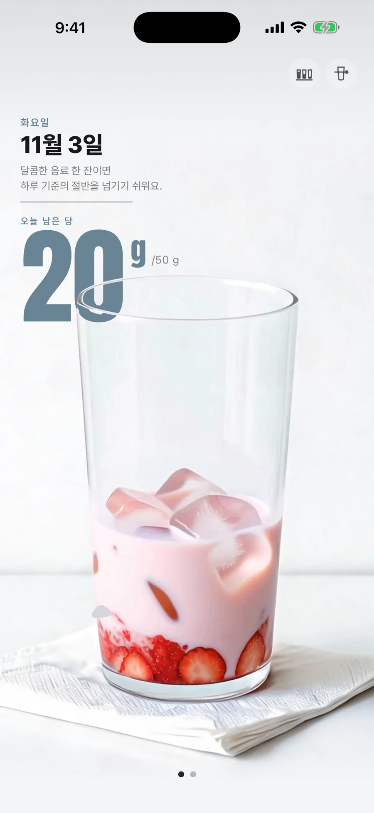
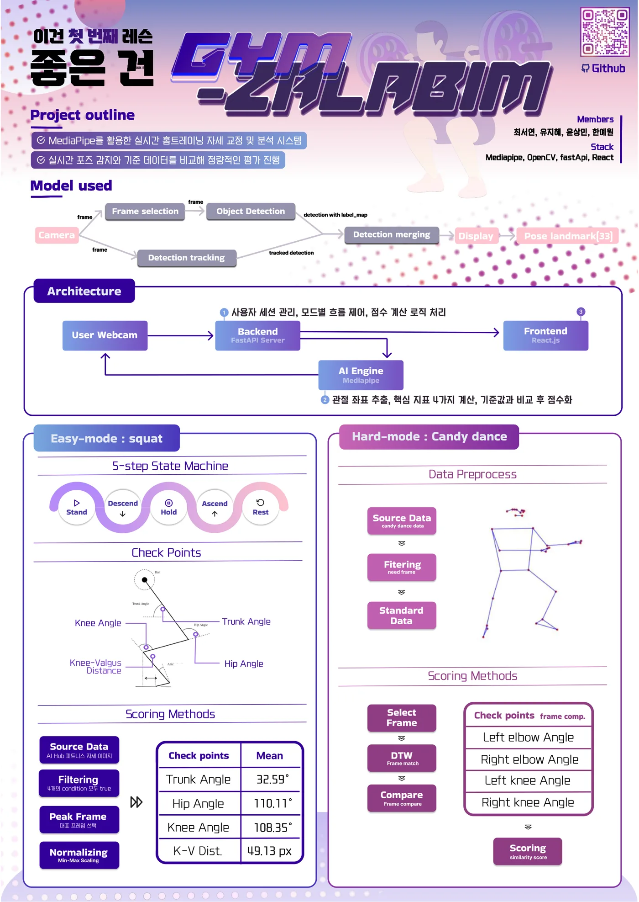

한예원
iOS 앱 두 개를 혼자 만들어 출시했습니다.
슈가캡 · 템포루틴 · 짐살라빔
슈가캡
참는 대신, 즐겁게 줄인다.
오늘 마실 수 있는 양이 컵 하나에 담기고, 한 잔 기록할 때마다 그만큼 비워진다.

카페 브랜드 16곳 메뉴 2,057종.
밤이 되면 남은 음료를 로슈와 카인에게 먹인다.
서버도 계정도 없다. 기록은 기기에만 남는다.
만든 방법
- Swift, SwiftUI, SwiftData. 기획부터 출시까지 혼자.
- 메뉴 데이터는 Python 파서로만 만들고 손으로 고치지 않는다.
- CI가 빌드, UI 테스트, 스토어 스크린샷까지 찍는다.
- AI와 같이 쓴 코드는 ruff, mypy, pytest를 지나야 들어온다.
템포루틴
당신 몸의 템포에 맞게.
겨울 · 봄 · 여름 · 가을
주기의 네 단계를 겨울, 봄, 여름, 가을로.
평균을 내면 패턴이 사라진다. 그래서 정답 대신 본인 기록을 돌려준다.
"기록상 이때 에너지가 높았어요." 단정 대신 관찰한 사실만.
무계정, 자체 서버 없음. Apple 건강 앱 연동은 선택.


만든 방법
- Windows에서 개발. 빌드는 GitHub Actions macOS 러너에서 TestFlight로.
- 예측 엔진은 순수 Foundation 패키지(TempoCore)에 테스트와 함께.
- 베타 피드백을 열 차례 넘게 반영해 출시.
짐살라빔
웹캠 하나로 스쿼트를 채점한다.

스쿼트를 다섯 단계로 나눠 무릎, 몸통, 엉덩이 각도를 기준값과 비교한다.
정확도 대신 실시간을 골랐다. MediaPipe.
AI 동아리 4인 팀. 자세 인식 모델 리서치와 데모를 맡았다.
데모데이 부스에서 시연하자 교수들까지 직접 스쿼트를 해 보고 갔다.
AI와 일하는 방식
스펙 문서 하나가 단일 출처다. AI도 나도 거기서 출발한다.
AI가 쓴 코드는 린터, 타입 체크, 테스트 게이트를 지나야 들어온다.
화면은 스크린샷으로 확인한다. CI가 찍고, 내가 본다.
AI를 잘 쓰려면 그 일을 맡기는 영역을 먼저 이해해야 한다.
이 페이지도 같은 방식으로 만들었다. GitHub에서 보기